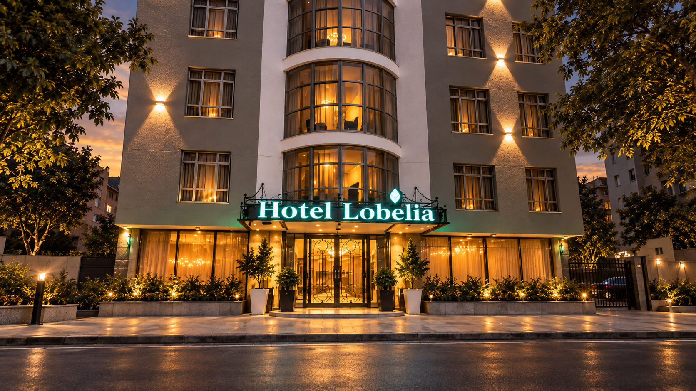
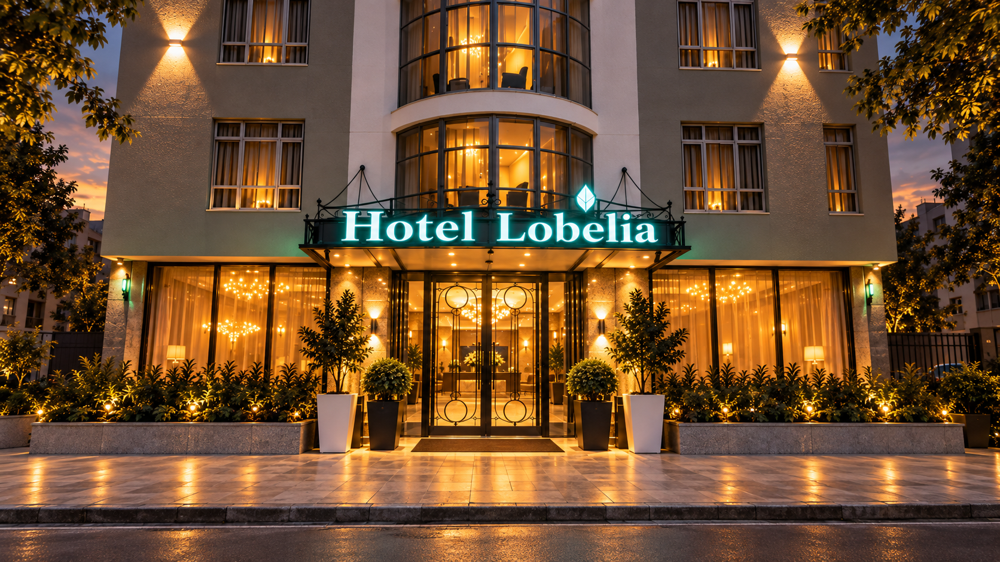
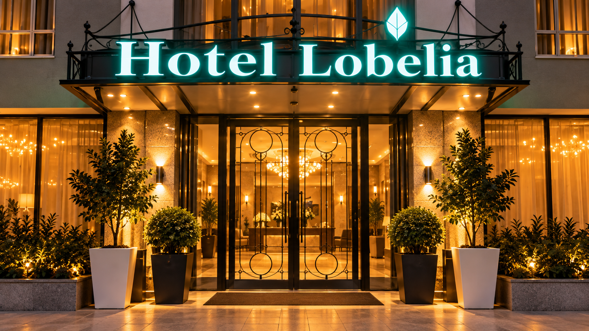
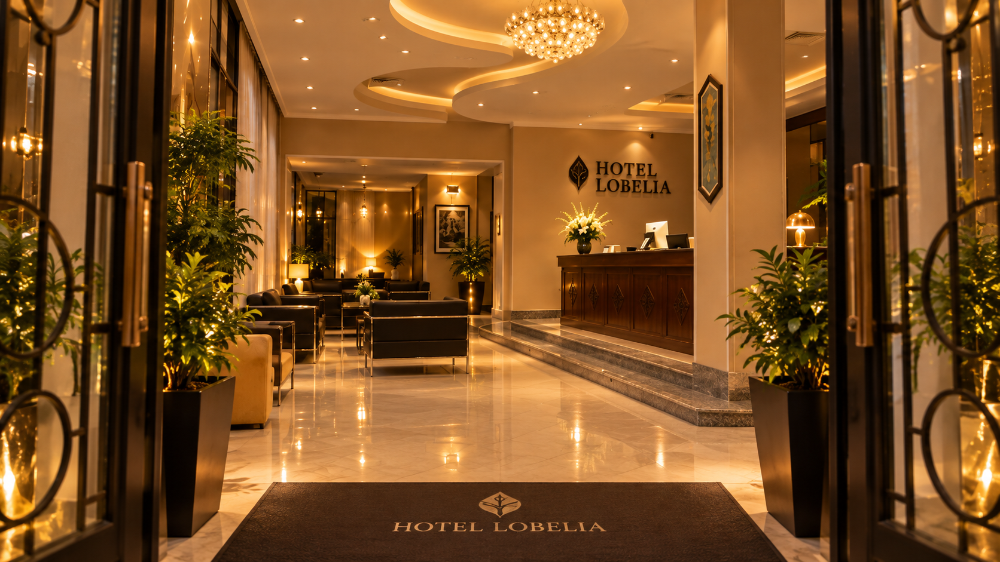
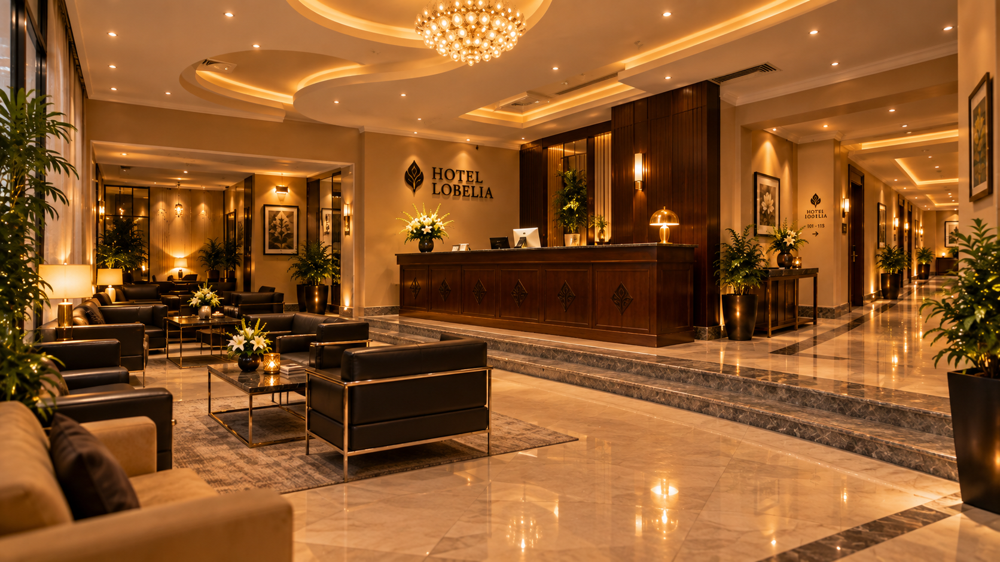
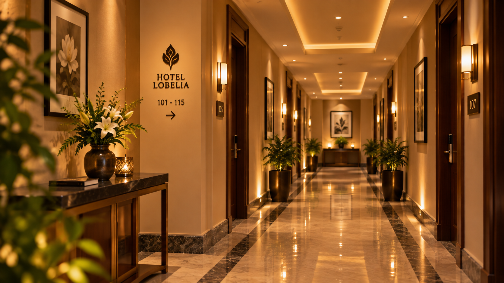
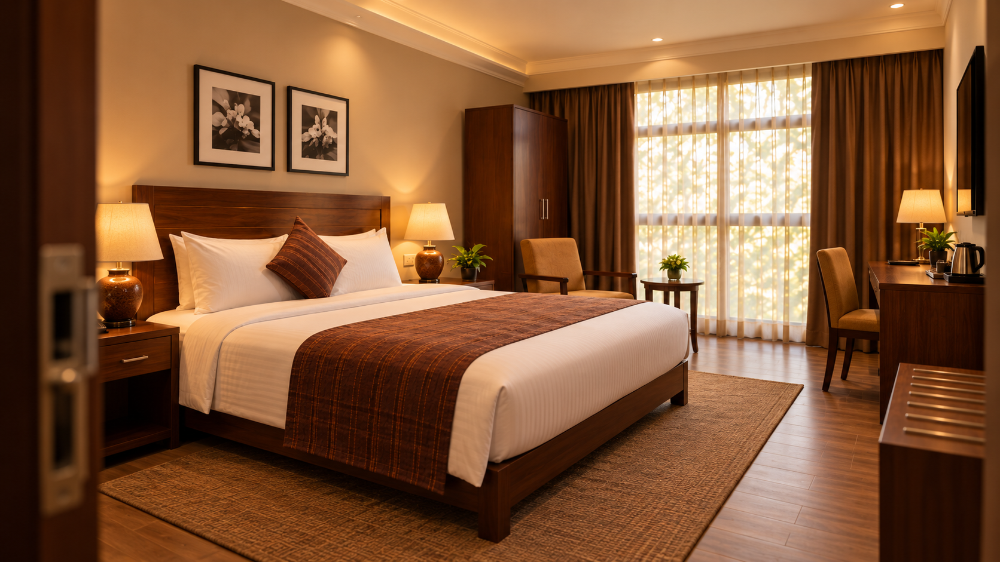
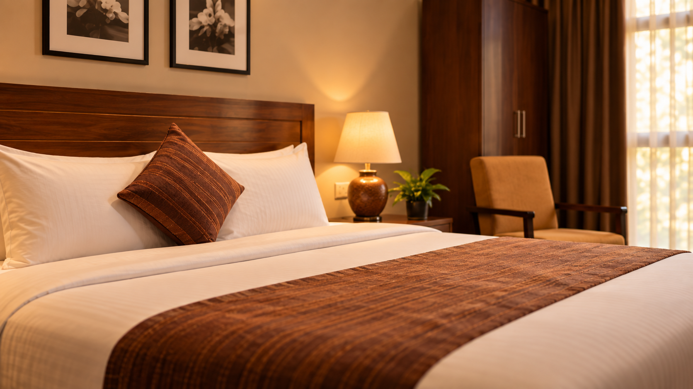
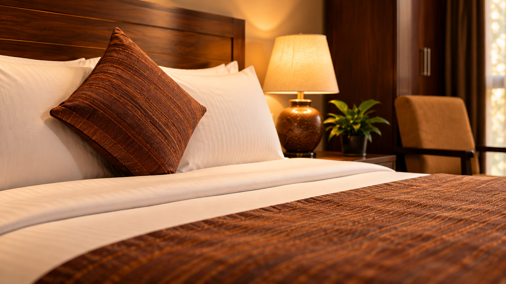

01
More space
Suite
A generous stay for slower mornings, longer visits and room to settle in.
Explore room ↗Three minutes from Bole International Airport
A warm, quietly comfortable stay in the heart of Bole—close to your flight, restaurants, coffee and the rhythm of the city.









A calm base in Bole, only minutes from Addis Ababa Bole International Airport.
As you approach the hotel, the pace of the city starts to fall away.
The entrance becomes the transition point between busy Bole and a quieter place to stay.
Warm interiors and polished details make arrival feel easy.
Pause at reception, ask what you need, then continue deeper into the hotel.
Move away from the lobby and toward the private part of your stay.
Warm wood, soft light and a comfortable room designed for an easy night in Addis.
The room becomes more intimate as the journey settles into rest.
The journey ends here—with a quiet room and a bed ready when you are.
A personal welcome
 Bole · Addis Ababa
Bole · Addis AbabaHotel Lobelia brings a familiar sense of home to one of Addis Ababa’s most convenient neighbourhoods.
Stay minutes from Bole International Airport, with restaurants, coffee, banks and city life nearby—then return to somewhere quieter.
እንኳን ወደ ሆቴል ሎቤሊያ በደህና መጡ።
 A quieter welcome
A quieter welcomeRooms & suites
Four room types, each designed around the same idea: make your stay feel easy from the moment you put your bags down.
See current availability ↗


Inside Lobelia


Everything within reach
Start the day downstairs, without planning another stop.
A complimentary connection to nearby Bole International Airport.
Stay connected for work, travel and everyday use.
Coffee, breakfast, meals and an easy place to meet.
Keep your routine while you are away.
A slower ending after a long day in the city.
A practical space for small business gatherings.
Support whenever your flight brings you in.
Step outside
In the neighbourhood
Stay close to the airport without feeling disconnected from Addis Ababa.
Coffee, Ethiopian food, culture, shops and everyday conveniences are all nearby, making Hotel Lobelia an easy base for a short stop or a longer visit.

Welcome to Addis Ababa
Stay in the heart of Bole
Ready when you are.
Book your stay ↗Bole Sub-City, Kebele 03/05, Bldg No. 2241
Addis Ababa, Ethiopia